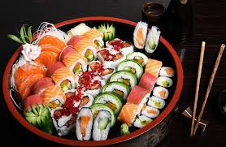
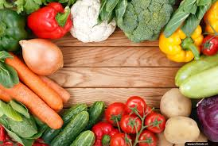

Ai? Cái gì? Ở đâu?...
.jpg)
Tình yêu và gia đình
trầu cau
.jpg) Nói đến hạnh phúc gia đình chúng ta thường mô
tả bằng những
từ thật đệp đẻ và được thể hiện qua những
gia trị đạo đức rất đáng trân trọng như
tình yêu, lòng chung thủy, tình nghĩa vợ chông
lòng yêu thương hy sinh cho con cái,
sự quý trọng hiểu dễ của con cháu với cha mẹ ông bà
Nói đến hạnh phúc gia đình chúng ta thường mô
tả bằng những
từ thật đệp đẻ và được thể hiện qua những
gia trị đạo đức rất đáng trân trọng như
tình yêu, lòng chung thủy, tình nghĩa vợ chông
lòng yêu thương hy sinh cho con cái,
sự quý trọng hiểu dễ của con cháu với cha mẹ ông bà
Xây dựng hạnh phúc gia đình qua những bữa ăn cơm hàng ngày
 Nói đến hạnh phúc gia đình chúng ta thường mô tả bằng những từ thật đẹp đẽ và được thể hiện qua những giá trị đạo dức rất dáng trân trọng như tình yêu lòng chng thủy tình nghĩa vợ chồng, lòng yêu thương hy sinh cho con cái sự quý trọng biểu hiện để cảu con cái vs cha mẹ
súc khỏe
10 lời khuyên trong dinh dưỡng
 Cơ thể chúng ta cần nhiều chất dinh dưỡng từ nhiều nguồn lương thực khác nhau vì vậy chúng ta nên thay đổi các loại lương thực khác nhau. chúng ta không cần kiêng chi cả quan trọng là chú ý đều số lượng...
Làm sao bỏ thuốc lá?
sức khỏe của chính bạn không hút thuốc lá giảm thiểu đán kể rủi ro mắc các loại bệnh ung thư và sức khỏe sẽ tăng lên đáng kể so với khi còn hút thuốc
Du lịch
Các loại tour mới nhất
các điểm du lịch nổi tiếng trên thế giới
Ẩm thực
.jpg)
Âm nhạc
Nhạc thiếu nhi
.jpg)
Dân ca
.jpg)